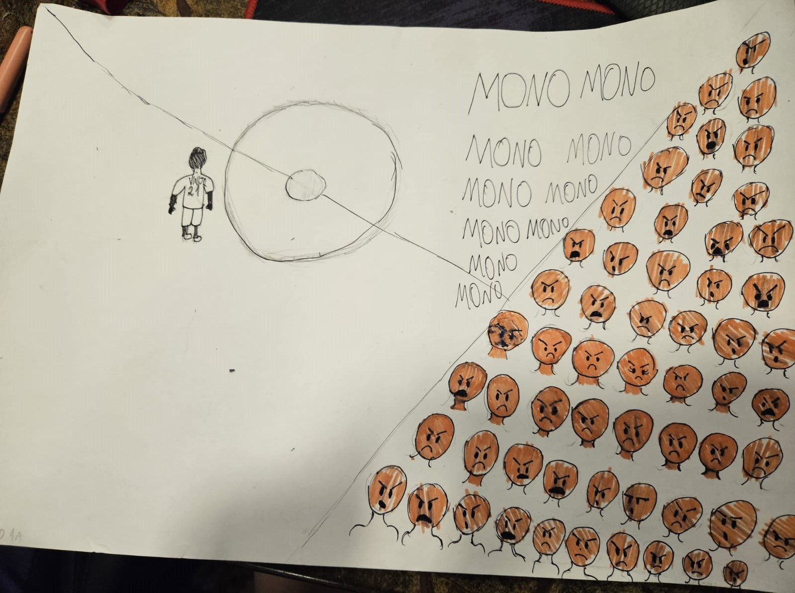

Coluna de opinião História
O mundo mudou, e por isso, a humanidade precisa ter um grande instinto de adaptabilidade para continuar evoluindo e tendo um avanço como sociedade, nesses avanços uma das profissões que mais tiveram adaptações com o decorrer do tempo foi a do construtor, ela teve diversos fatores para se tornar o que é hoje, sendo elas, mudanças históricas,sociais, culturais e até mesmo tecnológicas.
Antigamente, a construção era feita por mestres construtores, os mesmos projetavam e faziam a construção, porém mesmo com tudo isso não possuiam uma formação formal desenvolvida, indo um pouco mais pra frente na história, já no Renascimento e no Iluminismo ocorreu um interesse em construções mais clássicas e junto com essa curiosidade veio uma valorização da profissão do construtor, já visando também as suas especializações e como uma disciplina acadêmica.
Já no século XX, a arquitetura se desenvolveu mais ainda, com arquiteturas mais complexas e modernas, o ensino de construção também foi mudado, não sendo mais ensinado por herança de família, como um pai construtor ensinar para seu filho, foram criadas escolas de ensino nas quais existem especializações na área da construção.
 Brasil resgatou 918 vitimas de trabalho escravo em 2023.
Brasil resgatou 918 vitimas de trabalho escravo em 2023.
Número foi registrado entre janeiro e 20 de março deste ano, por meio de operações do Ministério do Trabalho.
Racismo estruturado na nossa sociedade : entenda os casos e se aprofunde nisso. Apesar de todos os eventos recentes de mobilização contra o racismo, sejam eles Black Lives Matter , o ato racista contra o jogador de futebol Vini Jr, o racismo infelizmente está presente na nossa sociedade de maneira enraizada, para entender melhor o tema, entrevistamos duas pessoas com o propósito de realizar uma pesquisa para entender esse preconceito intrínseco. Realizamos duas perguntas, sendo elas : " O que você acha sobre a abolição da escravidão ter sido tão tardia comparada a outros países?" e a outra questão seria " Acha que alguns conceitos da escravidão estão na sociedade até hoje?"Com base nas entrevistas feitas no colégio SENAC, em São Leopoldo , Rio grande do Sul, ambas pessoas acham que sim, a abolição no Brasil foi realmente tardia e por conta desse atraso o país ainda tem conceitos racistas aplicados no dia de hoje."A gente pode ver né, que as pessoas negras na maioria das vezes estão servindo outras pessoas no trabalho, seja como um empregado, faxineiro entre outros né?" -Entrevistado 1O outro entrevistado ainda concluiu que : "Por isso acredito que sim, o Brasil é um país racista mesmo tendo grande parte da sua população retinta e negra, e o processo para acabar com esse preconceito é notar essas diferenças que sofremos no dia a dia." -Entrevistado 2 Assim como no nosso país, outros lugares o preconceito pode ser mais escancarado ainda, como nos Estados Unidos, que há três anos atrás um policial matou George Floyd, um homem negro asfixiado no chão, então nós da equipe acreditamos que esse processo de realização será demorado porém podemos começar mudando com nós mesmos, percebendo as injustiças e as diferenças e de certa forma mudando elas no nosso dia a dia.
 Apresentando a Liv-up e sua tecnologia revolucionária
Apresentando a Liv-up e sua tecnologia revolucionária
A Liv-Up é uma empresa portuguesa de foodtech que está revolucionando a forma como nos alimentamos. Fundada em 2015, a Liv-Up desenvolveu uma tecnologia de impressão 3D para produzir alimentos nutritivos e saborosos a partir de ingredientes 100% naturais.A tecnologia patenteada da Liv-Up replica o processo de cozimento tradicional, usando precisão robótica para misturar e cozinhar os ingredientes. O resultado final são refeições saudáveis, como legumes, frutas, carnes e carboidratos, com textura e sabor idênticos aos alimentos cozidos de forma convencional. A impressora 3D de alimentos da Liv-Up mistura e cozinha os ingredientes em condições ideais de tempo e temperatura. Isso permite que os nutrientes e o valor nutricional dos alimentos sejam preservados. As refeições são preparadas sob demanda para garantir frescor e qualidade.A tecnologia da Liv-Up tem o potencial de transformar a forma como nos alimentamos e vivemos. Suas refeições saudáveis e sustentáveis podem ajudar a reduzir o desperdício de alimentos e as emissões de carbono. A Liv-Up também está trabalhando para tornar as refeições impressas 3D acessíveis a todos. Em breve, sua tecnologia revolucionária pode estar em nossa cozinha. A Liv-Up é uma empresa de foodtech portuguesa que está mudando a forma como nos alimentamos. Fundada em 2016, a Liv-Up desenvolve e comercializa alimentos de origem vegetal, saudáveis e sustentáveis como alternativas aos produtos de origem animal. Os produtos plant-based da Liv-Up oferecem vários benefícios em comparação com alimentos de origem animal. Em primeiro lugar, eles são mais saudáveis, pois contêm menos gordura saturada e colesterol, e mais fibras. Além disso, a produção de alimentos de origem vegetal gera uma pegada de carbono muito menor do que a produção de carne ou laticínios. Em segundo lugar, os produtos da Liv-Up são muito mais sustentáveis. A pecuária é responsável por até 18% das emissões globais de gasses de efeito estufa, enquanto a produção de vegetais emite muito menos CO2. Além disso, a produção de carne requer muito mais terra, água e outros recursos. Portanto, optar por alimentos plant-based é uma das melhores coisas que podemos fazer pelo planeta. Por fim, os produtos da Liv-Up apelam para os nossos valores éticos de compaixão pelos animais. Ao escolher alimentos de origem vegetal em vez de produtos de origem animal, estamos optando por não apoiar práticas cruéis de pecuária industrial. Em resumo, os benefícios dos alimentos plant-based da Liv-Up são muitos: mais saúde, mais sustentabilidade e mais ética. E o melhor de tudo é que eles têm um sabor delicioso!
 Vagas de emprego
Vagas de emprego
JOVEM APRENDIZ
Aprendiz
Formação Mínima Ensino Fundamental - Completo
Requisitos da Função Ter entre 14 e 24 anos e estar matriculado ou já ter concluído o Ensino Médio
Turno Manhã
Publicação 27/09/2023


 LOOKING FOR NEW JOB? LOOK HERE
LOOKING FOR NEW JOB? LOOK HERE
Are you looking for an opportunity to grow and expand your skills in an interesting and rewarding line of work? If so, this career may be the one for you!
Experience a positive work-life balance, with a Monday through Friday (8am - 5pm) work schedule and excellent benefits!
Contribute to our communities by helping the Utah Office of Recovery Services (ORS) in their mission to promote responsibility, by providing child support services and support for children in care to help ensure parents are financially responsible for their children.
We are looking for hard working, ambitious people to perform the following tasks:
Receive extensive training to learn the interesting process to legally establish paternity and child support orders and/or enforce orders by collecting child support and enforcing other provisions within the order.
Verify and/or correct balances which may be owed, determine appropriate legal action including garnishment, lien, etc.
Prepare documentation in support of cases presented in court hearings.
Conduct research to gather evidence, analyze facts, and apply knowledge of the Office of Recovery Services rules, regulations and policies.
For more informations, click here : https://encurtador.com.br/fryRU

:max_bytes(150000):strip_icc()/GettyImages-1266193531-2000-52f80fac333f493a8aa75f91991a5063.jpg) Processo criativo releitura operários
Processo criativo releitura operários

Acompanhe o processo de uma obra feita pelos alunos do colégio SENAC em São Leopoldo.

No nosso processo criativo escolhemos essa temática mais pesada justamente para chocar as pessoas e perceber quão triste é a desigualdade não só aqui no Brasil mas no mundo inteiro, é preciso entender que tudo isso é fruto de um passado escravo que tivemos no mundo inteiro e que infelizmente até hoje não foi curado, por mais que tenha sido abolido, infelizmente apesar dos grandes avanços em que as pessoas negras conseguiram com os seus direitos humanos parece ainda não ser suficiente, por isso, a luta contra o racismo é responsabilidade de todos nós, devemos nos juntar, independente de sua origem para criar, aos poucos, uma sociedade livre, justa e em harmonia, onde cada indivíduo é valorizado e não discriminado.